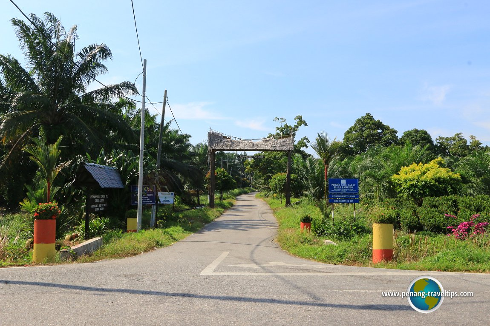
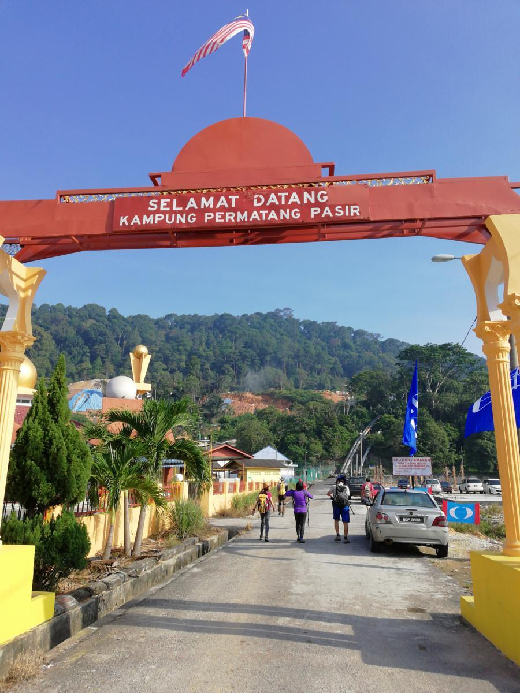
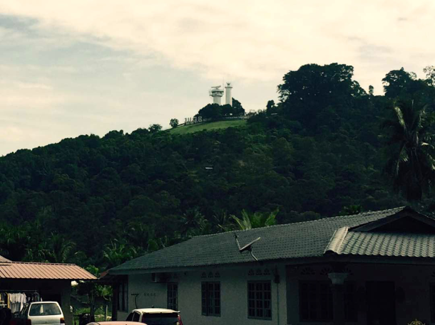

1. KAMPUNG MELAYU PULAU CAREY
For residents of Kampung Melayu Pulau Carey, the population there is in the neighborhood of 300 people, including men, women, elderly and children. For many people, the village is dominated by the Malays only. For active activities done in this area are agricultural activities where in this village there is an agricultural industry such as oil palm plantations. The productive life of an oil palm plantation is about 30 years which gives birds and mammals stability for a much longer period than for other crops.

2. KAMPUNG PERMATANG PASIR
For the residents of Kampung Permatang Pasir, the total population there is around 3,500 people including men, women, senior citizens and children. Also, the number of female population is more than male in this village. For many people, the village is dominated by the Malays 2,500 people, in addition to the chinese and indian, each having 460 and 420 people there. For activities that are actively done there are agricultural activities. Apart from that activity, there are also sports activities that are actively done there, namely cycling and jogging.
